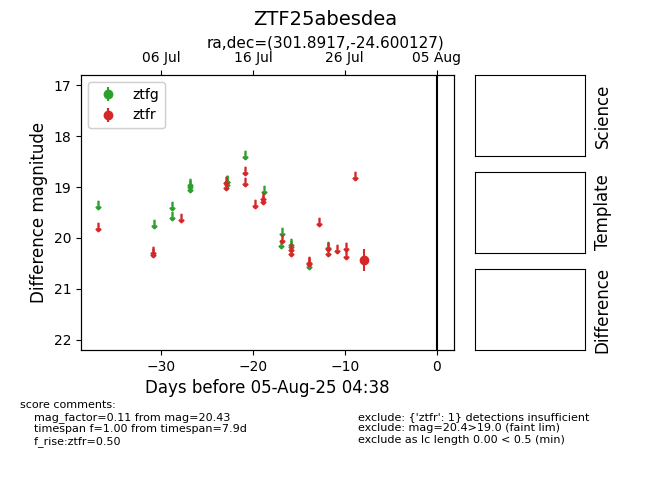

Target ZTF25abesdea at 2025-08-05 04:38, see:
FINK: fink-portal.org/ZTF25abesdea
Lasair: lasair-ztf.lsst.ac.uk/objects/ZTF25abesdea
ALeRCE: alerce.online/object/ZTF25abesdea
alt names
ZTF25abesdea (ztf,fink)
coordinates:
equatorial (ra, dec) = (301.8917,-24.60013)
galactic (l, b) = (17.6229,-26.98135)
photometry
last ztfr=20.43
1 ztfr detections
